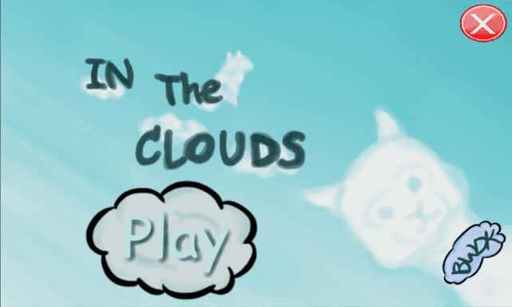
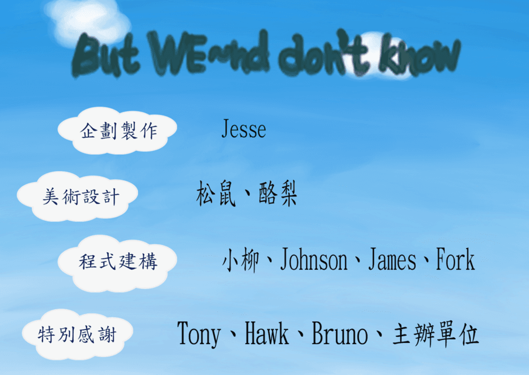
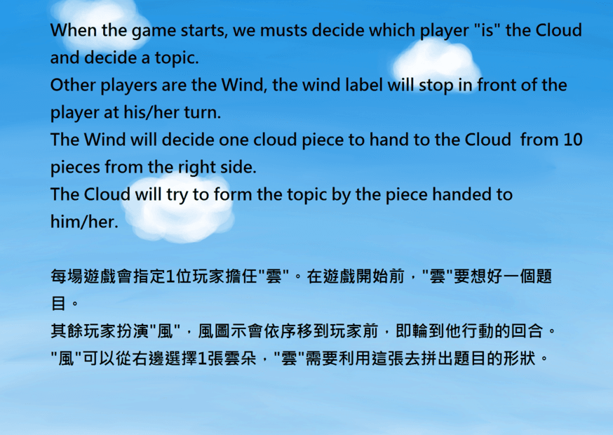
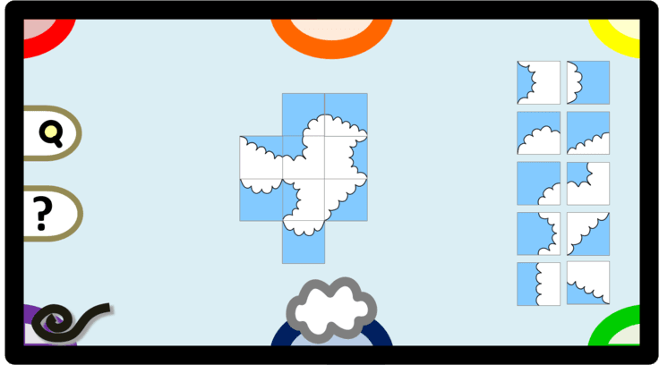

只有雲知道(In The Clouds) |
|
會參加GGJ這個活動存屬巧合，應學姊之邀，然後就衝一發了，最後發現自己去那邊根本是在打醬油，因為在參加活動之前，其實我並沒有碰過Unity這個軟體，如果撇除之前作為玩家玩的絕代雙驕OL的話... 先來介紹一下什麼是GGJ，GGJ的全名是Global Game Jam，它是一個開發遊戲的活動，參與者要在短時間(48小時內)和陌生的遊戲開法者合作，根據主題製作遊戲。 可以參考一下他們的網站→Global Game Jam 我所參加的是2014年1月24~25日的那次活動(如果我沒記錯的話)，雖然說是48hr長跑爆肝，從星期五晚上六點到星期日晚上六點的不間斷活動，但是我們還是有輪流睡覺的，發現人老了真的熬不得夜QQ 在大家都不認識、不熟悉的狀態下，我們跟桌遊組併組了。一開始我們七嘴八舌的討論要做什麼遊戲，最後採用了杰西大哥的構想，他的專長是設計桌遊的，因此我們把他設計的一款闔家桌遊給電子化，就是這款「只有雲知道」。
↓開始畫面
 下面是工作人員列表，如果我沒記錯，其實有一大部分程式都是Tony幫忙做的ORZ...對不起，我太廢了，明明是報名程式的說...
↓工作人員
 這款遊戲大約可以四到六人一起玩，並沒有所謂的輸贏(所以才說是闔家桌遊)
↓遊戲規則
 ↓畫面設計  之後還有機會的話，還想再參加GGJ來個自我挑戰，不過我覺得我應該先把Unity給練好，我之前都是用allegro來寫，太小眾了，根本沒辦法和其他人配合。此外，最好是要先有構想，不用太細的想法，至少要先想出大方向，再根據題目去做細節調整，我們這次在構想的時候花太多時間了，意見一直不統一。 |
| by 陌阿柳 |